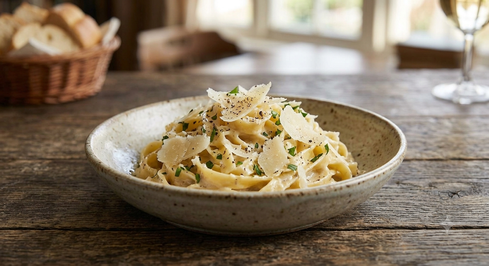
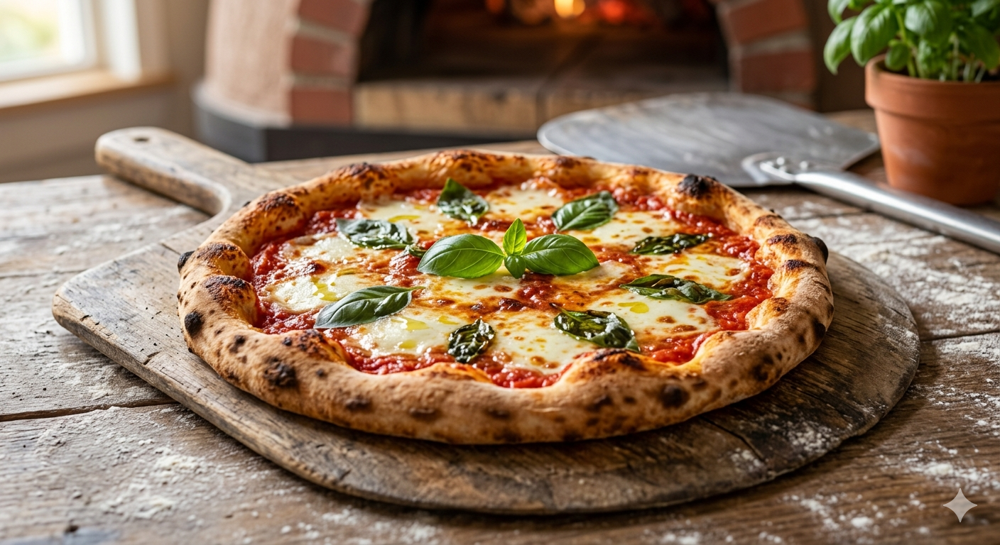
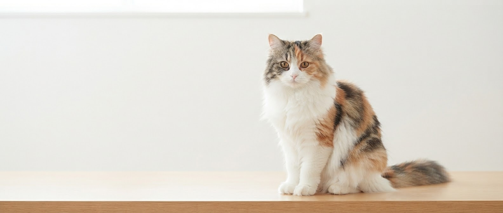

FOUNDER STORY
為せば成る。

創業者「ジュリママ」こと中村ユコ。
猫を愛し、母として、そして経営者として
「美味しい料理と癒やしの提供」に情熱を注ぐ。
その想いが一皿一皿に宿っています。
YAMAGATA / JUMONJI
猫が佇むアメリカンスタイルな店内で、
本格イタリアンをカジュアルに愉しむ。
国道13号沿い、猫の看板が目印。
澄み渡る贅沢な旨味、山形牛の贅沢。
カフェレストラン JuRIは、
日常を少しだけ特別にする場所です。
OFFICIAL INSTAGRAM
※最新の営業状況はこちらをご確認ください

1全てのメニューに生パスタを使用。アルデンテにこだわった弾力ごたえと、濃厚なソースが奏でるハーモニーは一度食べたら忘れられません。

2薄生地でサクッと軽い食感のローマ風ピッツァ。海老チリ味やチーズたっぷりの逸品は、おつまみやシェアにも最適です。

3店内の至る所に猫モチーフが。付かず離れずの心地よいサービスで、お一人様でもご家族でも、ゆったりとした時間を過ごせます。
ランチ1250円でビュッフェサラダ、メイン、ドリンク、デザート付き！生パスタが最高に美味しくて、秘伝豆のポテサラがお気に入りです。
猫充できました。パスタももちろん美味しいですが、サラダが大きめの器でたっぷり野菜が摂れるのも嬉しいポイントです！
FOUNDER STORY
創業者「ジュリママ」こと中村ユコ。
猫を愛し、母として、そして経営者として
「美味しい料理と癒やしの提供」に情熱を注ぐ。
その想いが一皿一皿に宿っています。
【店舗一時休業・キッチンカー準備中！】
現在、実店舗は一時休業中ですが、JuRIの味を皆様にお届けするためキッチンカーでの移動営業が本格始動！薗王ジュピアをはじめとする人気エリアで、焼き立てのローマ風ピッツァやもっちり生パスタをお楽しみいただけます。
大自然の中で食べるアツアツの本格ピッツァ！イベントや観光ついでにお気軽にお立ち寄りください。
「並ばずに焼き立てを持ち帰りたい」「おうちでゆっくり味わいたい」を叶える事前オーダーシステムを準備中。
出店場所や営業スケジュールは公式Instagramで随時更新中！
最新の出店情報をInstagramで見る